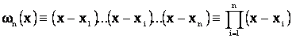
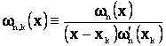
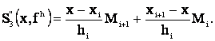
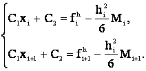

III. ИНТЕРПОЛИРОВАНИЕ СЕТОЧНЫХ ФУНКЦИЙ
На отрезке рассмотрим ”n” произвольных точек, удовлетворяющих условию:
.
Пусть
- произвольная сеточная функция со значениями в точках
, которые будем называть узлами интерполяции. Задача интерполяции сеточной функции состоит в том, чтобы найти такую функцию
, которая удовлетворяет соотношениям:
 (i=1,2,…n). Иными словами, это задача непрерывного продолжения функции
со множества узлов
на весь отрезок
. Очевидно, что такая задача обратна задаче проектирования пространства
в пространство сеточных функций
(i=1,2,…n). Иными словами, это задача непрерывного продолжения функции
со множества узлов
на весь отрезок
. Очевидно, что такая задача обратна задаче проектирования пространства
в пространство сеточных функций
 и имеет бесконечно много решений. Чтобы сделать задачу интерполирования однозначно разрешимой, необходимо ограничиться неким классом функций из
, в котором это продолжение (интерполянт) будет искаться. В качестве таких классов будем рассматривать алгебраические многочлены и сплайн функции. Нижеприведенный материал, в ином изложении, можно также найти в
[1] и
[2].
и имеет бесконечно много решений. Чтобы сделать задачу интерполирования однозначно разрешимой, необходимо ограничиться неким классом функций из
, в котором это продолжение (интерполянт) будет искаться. В качестве таких классов будем рассматривать алгебраические многочлены и сплайн функции. Нижеприведенный материал, в ином изложении, можно также найти в
[1] и
[2].
Интерполирование алгебраическими многочленами. Символом
будем обозначать множество алгебраических многочленов на отрезке
, степень которых не превосходит “m”. Рассмотрим многочлены:
;
,
Очевидно, что:
,
и
при
и любом фиксированном “k”. Многочлены
называют фундаментальными многочленами интерполяции или базисом интерполяции Многочлен
вида
очевидно, является решением задачи интерполирования сеточной функции
в пространстве
. Решение это единственное, действительно, пусть
и
, тогда
,
, значит
 .
.
Многочлен (1) называется интерполяционным многочленом в форме Лагранжа, этой формой интерполяции многочлена удобно пользоваться, если набор интерполяционных узлов фиксирован и меняются интерполируемые функции. Если же число узлов интерполяции наращивается в процессе эксперимента, а функция
фиксирована, то удобнее пользоваться интерполяционным многочленом в форме Ньютона
(см., например,
[1,
2] или
[3]).
Оценка погрешности интерполяции.
Пусть сеточная функция
является результатом проекции некоторой функции f(x) в сеточное производство
, то есть
Функцию
будем называть погрешностью интерполяции, оценим эту погрешность. Очевидно, что
, при
; пусть
и отлично от узлов интерполяции:
. Рассмотрим при
 функцию:
функцию:
.
Предположим, что
, тогда то же самое можно сказать и про функцию g. Легко проверить, что функция g(y) имеет, по крайней мере,
нуль в точках:
. Поэтому производная
имеет на
, по крайней мере, “n” нулей, и так далее, a
обращается в нуль хотя бы в одной точке
. Поскольку:
,
то
Представление (2) позволяет получить оценку ошибки интерполяции в произвольной точке:
:
где
.
Оптимальный выбор узлов интерполяции. Сформулируем сначала общую постановку проблемы оптимизации методов решения задач из некоторого класса. Пусть
- некоторый класс решаемых задач и
- множество методов решения этих задач. Обозначим:
- погрешность, которую дает метод “m” при решении задачи “p”. Величину
- погрешность, которую дает метод “m” при решении задачи “p”. Величину

называют погрешностью метода “m” на классе задач “P” Величину
называют оптимальной оценкой погрешности методов из множества М на классе задач P. Если существует метод
 , на котором эта оценка достигается, т.е.
, на котором эта оценка достигается, т.е.

то такой метод называется оптимальным.
Пусть теперь: Р - множество задач приближения функций, которые определены на отрезке
и удовлетворяют условию
.
Пусть М - множество методов приближения, состоящих в том, что функция заменяется ее интерполяционным многочленом
с узлами интерполяции
. Таким образом, метод решения “m” определяется выбором узлов интерполяции. Определим погрешность:
Согласно оценке
(3)
, имеем:
С другой стороны, для задачи приближения многочлена
oтносящейся к рассматриваемому классу, имеем, в силу
(2):
.
Следовательно:

Далее,
.
Известно (см.
[3]
или
[4]), что величина
достигается на множестве нулей полинома Чебышёва степени “n” на отрезке
, который определяется формулой:
.
Эти нули легко вычисляются:
а полином
в этом случае совпадает с
- полиномом "наименее уклоняющимся от нуля" в норме
пространства
(см.
[4]). При этом
и, в силу
(3), имеем оценку ошибки интерполяции с Чебышевскими узлами:
О сходимости интерполяционного процесса. До сих пор процесс интерполирования рассматривался на фиксированной сетке. Чтобы говорить о сходимости интерполяционного процесса, рассмотрим семейство сеток на
с возрастающим числом узлов:
.
Пусть
, рассмотрим последовательность интерполяционных многочленов Лагранжа
, связанных с соответствующей сеткой
.
Определение
1. Интерполяционный процесс для функции f сходится в точке
, если существует
.
Говорят, что интерполяционный процесс сходится равномерно на
, если

Оценки
(3) и
(5)
позволяют сделать вывод о том, что интерполяционный процесс для любой последовательности сеток сходится равномерно на классе функций
.
Если же класс функций более широк, то даже для последовательности равномерных сеток погрешность интерполяции для функций из этого класса может стремиться к бесконечности с ростом числа узлов. Примером может служить функция из следующей задачи.
Задача
1. Доказать, что для функции
в случае равномерной сетки
, i=2,3,… для некоторых M>0 и
имеет место оценка:
Итерационный метод построения многочлена Лагранжа (метод Невилле). Пусть -натуральные числа, удовлетворяющие условиям:
Нам потребуется уточнить обозначение (1) для многочлена Лагранжа: если он построен по значениям сеточной функции в узлах то этот многочлен будем обозначать символом: .
Теорема
1. Рассмотрим узлы и выберем - две различные точки из этого множества. Тогда:
Доказательство
. Многочлен в правой части формулы (6), очевидно, принадлежит классу . Докажем, что он интерполяционный для функции (рассуждения проводим по индукции). Из (6) следует:
Если , то
Теперь утверждение теоремы следует из единственности решения задачи интерполяции в по узлам
Алгоритм метода Невилле основан на следующих рассуждениях. Чтобы вычислить значение многочлена интерполяции по узлам и фиксированном x, рассмотрим, опираясь на формулу (6), следующие цепочки значений в точке x:
многочленов, построенных по одному узлу:
многочленов, построенных по двум узлам:
многочленов, построенных по трем узлам:
и так далее, и наконец, многочленов, построенных по k () узлам:
последним в этой цепочке будет значение в точке x интересующего нас многочлена :
Обозначим:

Эти величины, вычисленные в соответствии с формулой (7), можно расположить в виде нижне-треугольной таблицы (матрицы):
Вычисления осуществляются последовательно: сначала – по строкам, а внутри каждой строки – по столбцам, их можно формализовать в виде следующего псевдо-кода:
Алгоритм 1. Позволяет вычислять значения многочлена Лагранжа в фиксированной точке x.
 INPUT();
INPUT();
for i = 1 to n do
for i = 2 to n do
for j = 2 to i do  ;
;
OUTPUT()
=.
Интерполирование сплайнами. Предположим, что на отрезке
задана сетка:
и на ней определена сеточная функция
.
Определение
2. Интерполяционным сплайном степени
для сеточной функции
назовем функцию
, определенную для
и удовлетворяющую условиям:
- при ,
 , ;
, ;
- ;
-
Рассмотрим для начала сплайн степени один, его называют также “кусочно-линейным интерполянтом” Обозначим:
, .
Формулы для кусочно-линейного интерполянта выглядят следующим образом: при
Получим оценку сходимости для сплайна
. Предположим, что сеточная функция
является проекцией функции
, то есть
. Так как на отрезке
сплайн
является многочленом Лагранжа, построенным по узлам
, то, в силу неравенства
(3), для
, получим:
,
где
,
Так как
,
то
Очевидно, что при
, кусочно-линейный сплайн сходится к интерполируемой функции - это следствие оценки (8).
Построим кубический сплайн , он позволяет аппроксимировать не только саму функцию f(x), но и ее производные
. Обозначим:
, .
Так как - кубический полином на
(см. Определение 2, п.1), то функция
, при
- линейна и ее можно записать в виде:

Интегрируя это соотношение, получим:
Здесь
и
- некоторые константы. В силу п.3 Определения 2:
Эти условия и формула
(10)
позволяют получить уравнения для определения неизвестных
и :

Найдем
и , подставляя их в
(9) и
(10), получим (при
):
При
 из (11), получим:
из (11), получим:
Аналогично, для
 из (11) следует:
из (11) следует:
Из условия непрерывной ”склейки” производной (см. п.2 Определения 2):
получим (N-2) уравнения для определения величин
:
Для замыкания системы (15) недостает двух уравнений. Если известны величины
, то эти два уравнения получаются из условий:
 . . |
(16) |
|
Пусть известны
и полагая в
(11) i=1, a в
(14) i=n, приходим к уравнениям:
Можно определить величины
из
(15),
(16) или (15), (17), используя метод прогонки (см.
[1,
2]),
нетрудно проверить, что обе системы удовлетворяют условиям устойчивости прогонки (см.
[1,
2]). После этого искомый сплайн
 вычисляется по формуле
(12), а его производная
по формуле
(11).
вычисляется по формуле
(12), а его производная
по формуле
(11).
Следующее утверждение содержит оценки сходимости для кубического сплайна, его доказательство можно найти в
[3] и
[5].
Теорема
1. Пусть - сетка равномерная; сплайн
определяется системой уравнений
(15),
(17). Тогда:
где
ЛИТЕРАТУРА
Калиткин Н.Н. Численные методы. Москва «Наука», 1978, -512с.
Самарский А.А. Введение в численные методы. Москва «Наука», 1987, -288с.
Самарский А.А., Гулин А.В. Численные методы. Москва «Наука», 1989, -430 с.
Бахвалов Н.С. Численные методы-I. Москва «Наука», 1975, -631 с.
Бабенко К.И. Основы численного анализа. Москва «Наука», 1986, - с.